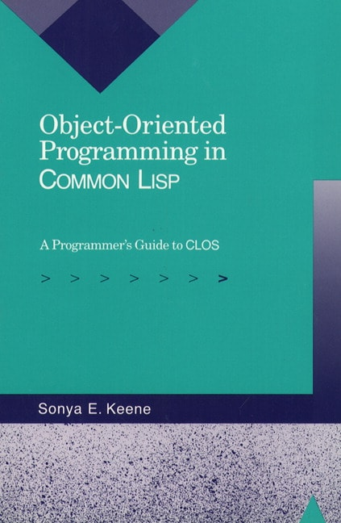

Object-oriented programming on Common Lisp: A programmer’s guide to CLOS

Sonja Keene. Object-Oriented Programming in Common Lisp: A Programmer’s Guide to CLOS. Addison-Wesley. ISBN 0-201-17589-4. 1989.
The definitive practical guide to using the Common Lisp Object System (CLOS). It’s written from a similar perspective to other object-oriented tutorials, which makes it very accessible for those who’ve had experience with something like Java or Python. However, CLOS isn’t just objects in Lisp, and isn’t in any sense just an object-oriented extension. It can take some time to change mindset enough to use it properly, and this book is a great guide to the core differences.
Firstly, it follows a completely different model of how to associate functions with data. Instead CLOS uses “generic” functions, where the exact code called is dispatched dynamically based on the types of any or all parameters: so it’s perfectly possible to have several definitions of the same generic function operating on objects of the same class, but taking arguments of different types. This multiple dispatch is a lot more flexible.
The second point actually follows from this. CLOS’ generic functions can be defined to any Lisp types: in fact they’re not statically associated with classes at all, and can operate on any types (classes or not) across the type hierarchy. This makes it closer to Haskell’s type classes than to Smalltalk’s (or Java’s) virtual methods, which are strongly bound to classes.
Thirdly, CLOS methods can be combined in a range of interesting ways, not simply by overriding previous definitions – and indeed you can define your own if you need to. And like Smalltalk (but unlike Java) CLOS classes have “metaclasses” that can re-define their basic functions. The art of the metaobject protocol is a better source for this level of detail.
The examples in the book delve into these features by means of sensibly-sized challenges that can be used to illustrate both basic design and implementation. and more advanced ideas like re-defining classes on the fly.